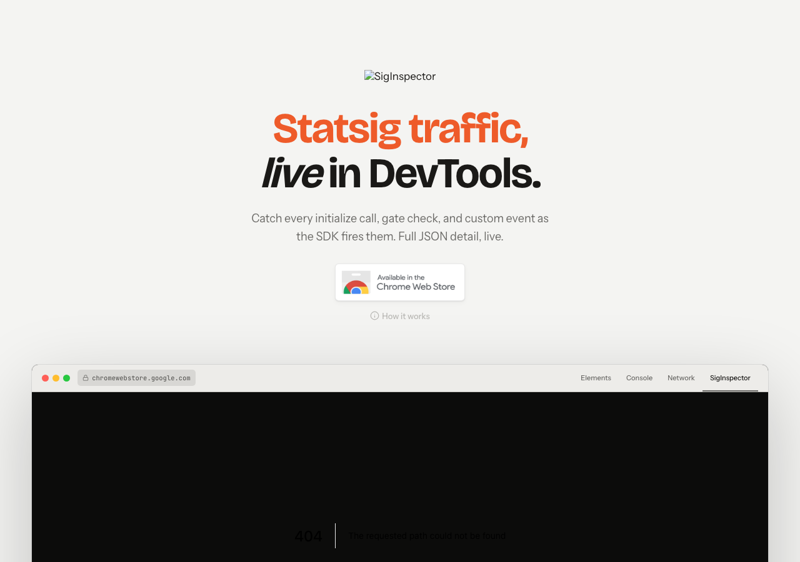
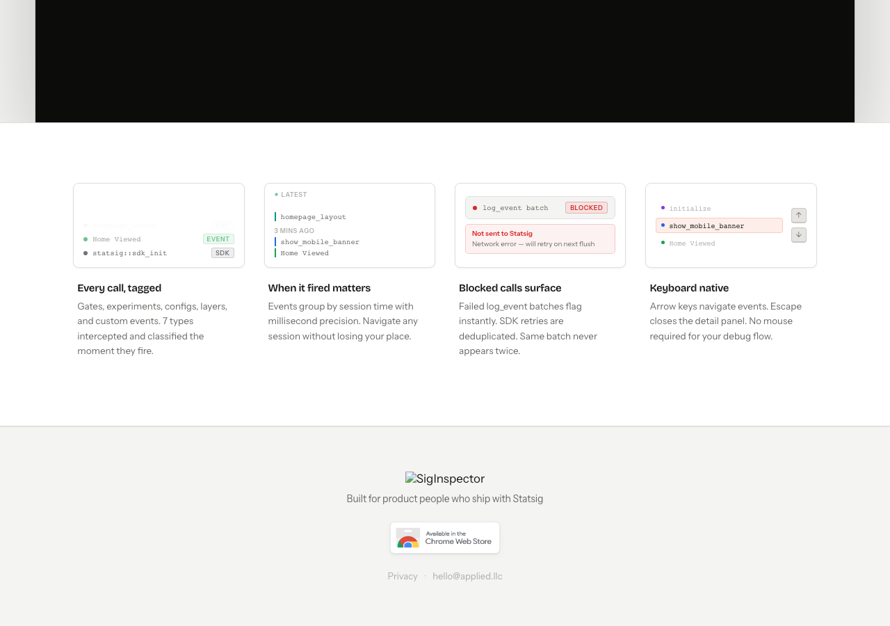

Statsig SDK traffic, live in DevTools. Every call intercepted, classified, and inspectable.
Statsig's SDK fires dozens of intercepts per page load. Debugging means digging through the Network tab waterfall, copying JSON blobs, and manually mapping call types to their source. There was no tool that surfaced SDK events where developers already work.
All 7 Statsig call types — INIT, GATE, EXP, CONFIG, LAYER, EVENT, SDK — caught the moment they fire. Timestamps to the millisecond, full JSON payload on click.
A first-class tab alongside Elements, Console, and Network. Filter by type, search by name, inspect payloads inline.
Manifest V3, no external dependencies, no network calls. Content scripts intercept SDK calls without touching page performance.


Published on the Chrome Web Store